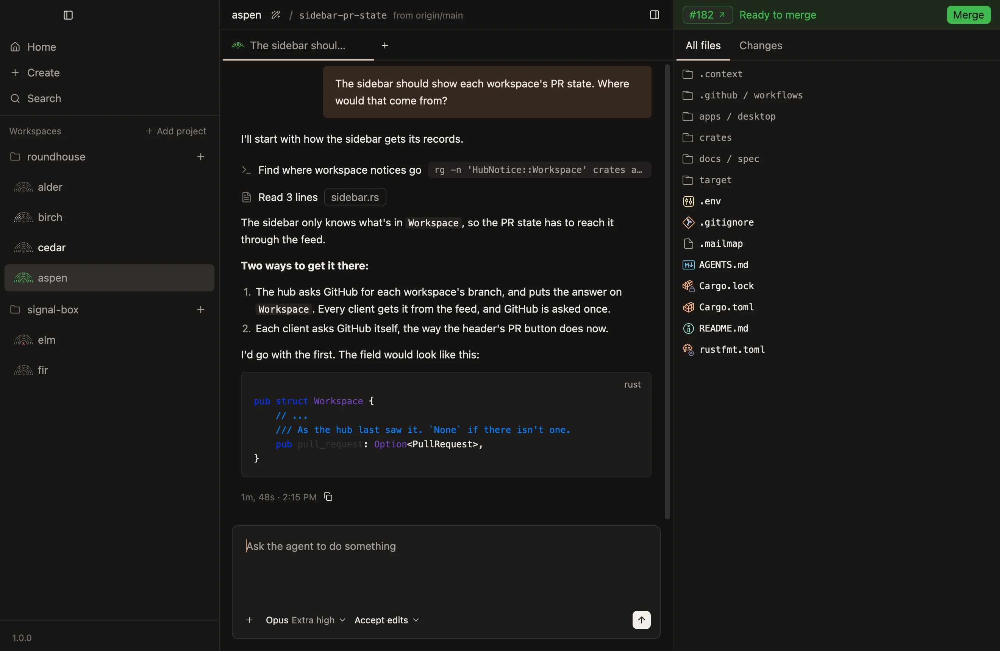
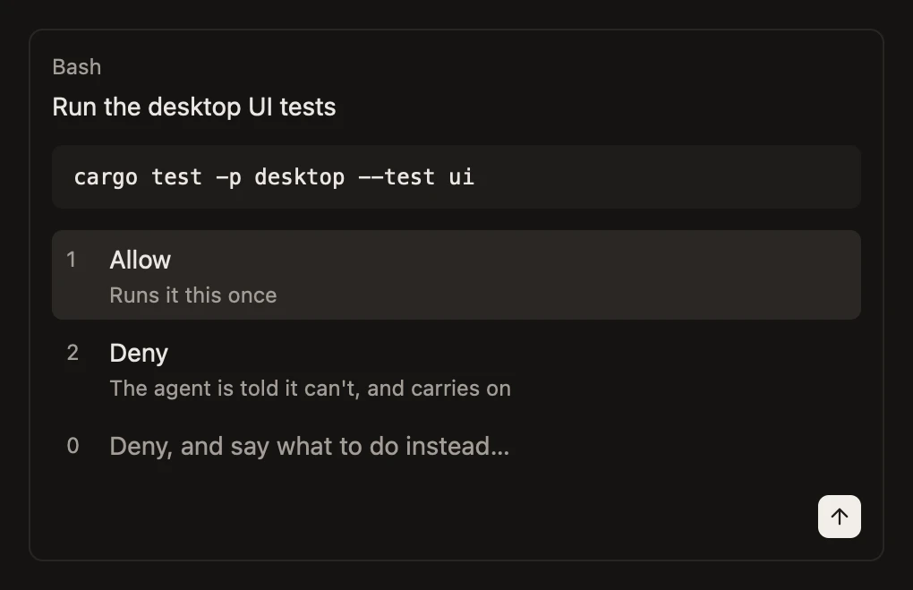
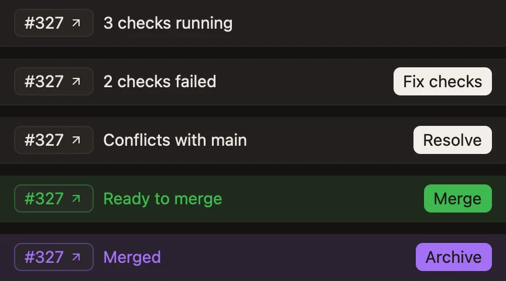

A native Mac app for running many coding agents, each in a workspace of its own, from idea to production.

Conductor showed how good running agents side by side can feel. On November 4 it was sold, and it stopped taking new users.
I tried a dozen alternatives. None thinks about the work the same way. None gets the small things right. None does the cloud and the phone well.
So on November 6, I started Roundhouse. More than 170 pull requests later, written by agents working side by side, it's the app I use every day. It's also the app it's built in.
One task. One workspace.
A worktree, a branch, ports and chats of its own. Nothing shared.
Quiet until it needs you.
A light while an agent works. A brighter name when one needs you. Nothing else moves.
Hand it over. Know where it stands.
Agents work with full access, so none sits waiting on you. When you want to see the route first, one plans, and asks before it changes anything.

From idea to production.
Plan it. Build it. Read the diff. Merge it. One place.

Agents outlive the app.
Close it. Quit it. Update it. They keep running.
Your agents. Your logins.
Claude Code today. Codex and OpenCode next. No account with us, and nothing sent to us.
Open source.
Every line is on GitHub, under Apache-2.0. Read it. Change it. Build on it.
The small things matter.
- Type before it's ready.A prompt sent during setup waits, then sends.
- The queue outlives the app.Queue prompts with ⌘↩. They send in order, even with the app closed.
- Stop means stop.The queue holds until you say go.
- Nothing typed is lost.A prompt that can't send comes back to the composer, files and all.
- Titles cost no context.A small model writes them, not your agent.
- See what's left.A ring shows how full the context is. Bars beside it show what's left of your plan's limits.
- Awake only while there's work.Your Mac stays up while agents run, and can sleep once they're waiting on you.
- Archiving is instant, and safe.The branch stays. Uncommitted work is never thrown away.
- A rerun check counts once.A pull request that passed on the second try reads as passed.
- Your GitHub limit stays yours.Pull requests refresh on their own, and leave room for your agents.
- Plan mode stays with its chat.A new one keeps the model and effort, and starts with full access.
- Updates wait for your agents.An update never stops one.
Native. Not a web view.
- Rust, all the way down.The app, the hub and the command line.
- Drawn on the GPU.With GPUI, the toolkit Zed is built on.
- Still when it's idle.A window with nothing happening draws nothing.
One hub. Every device. Today the hub runs on your Mac. It's designed to run on your own server or in the cloud, with your phone as another way in.
You
Your agents
- DesktopThe Mac app
- TerminalThe CLI
- PhoneThe iPhone app, next
- Your MacRight here
- Your serverSelf-hosted, next
- The cloudSandboxes, next
Coming from Conductor? You'll feel at home.
Repositories set up for it work unchanged. It's early: Mac and Claude Code today.
- MacApple silicon Download Download
- Windowsamd64 · Preview Download Download
- Windows on ARMARM64 · Preview Download Download
Windows is a first preview: unsigned, so Windows asks before it runs.